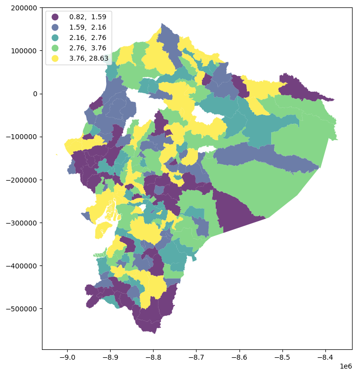
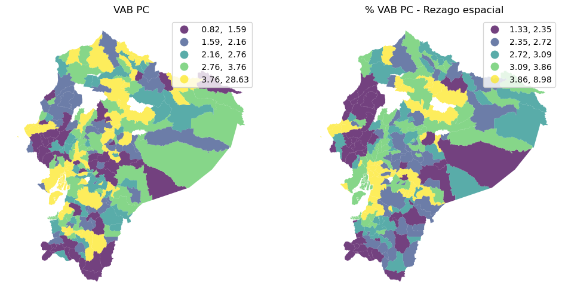
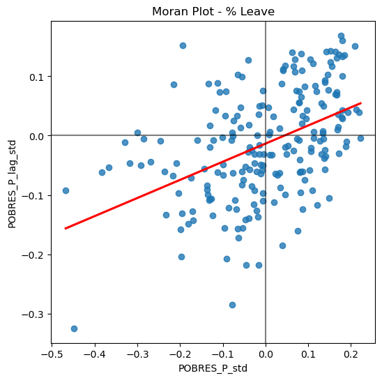
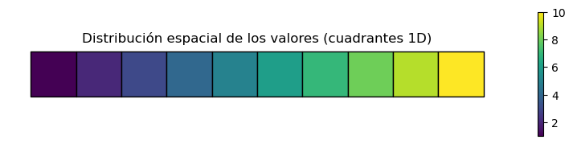
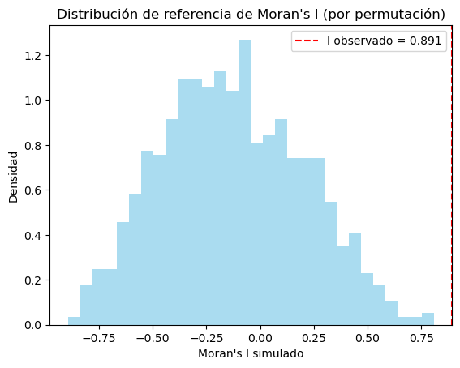
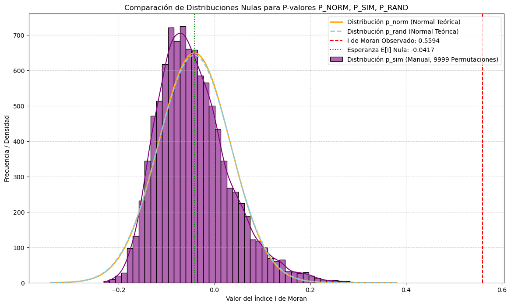
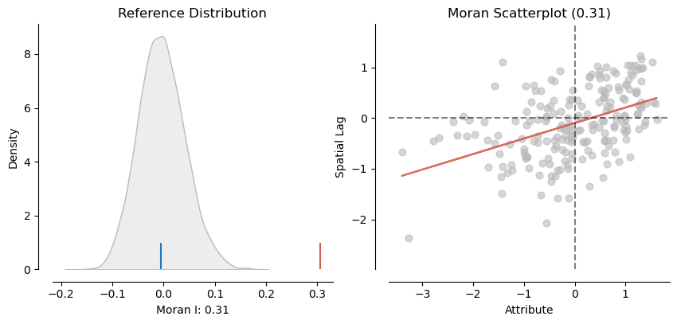
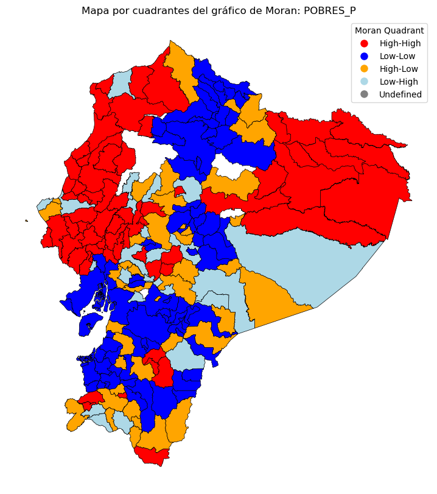

9. Autocorrelación global#
9.1. Introducción#
Los métodos de estadística espacial también se denominan análisis exploratorio de datos espaciales (ESDA). Las estadística espacial comprende métodos para probar la existencia de procesos de autocorrelación espacial. Las medidas de autocorrelación espacial se utilizan para evaluar la correlación de variables con respecto a la ubicación espacial.
La autocorrelación espacial significa que las observaciones geográficamente cercanas son más similares entre sí que las distantes. Esto hace posible predecir valores en un punto dado, conociendo los valores en otras ubicaciones.
La medida de autocorrelación espacial se puede utilizar de varias formas: para probar la existencia de autocorrelación espacial y características de la población; para determinar el grado de autocorrelación, por ejemplo, la distancia por encima de la cual las observaciones son independientes; determinar el modelo teórico apropiado para la estructura espacial observada o concluir sobre el proceso espacial.
Con base en las conclusiones de la ESDA, se puede rechazar la hipótesis de la aleatoriedad espacial, lo que abre el camino a la búsqueda de conglomerados espaciales (Anselin, 1999). Las conclusiones de la ESDA también son la base para la especificación espacial de los modelos.
9.1.1. Estadístico de Autocorrelación: una forma general#
Medida de similaridad
El producto vectorial: \(y_iy_j\)
Bajo aleatoriedad, el producto vectorial no es sistemáticamente grande o pequeño.
Cuando valores altos están sistemáticamente juntos, el producto vectorial será grande y vice versa.
Medidas de Disimilaridad
Dos medidas comunides de disimilaridad son:
diferencia al cuadrado \((y_i-y_j)^2\)
diferencia absoluta \(|y_i-y_j|\)
Bajo aleatoriedad, la medida de disimilitud no es sistemáticamente grande o pequeño.
Cuando valores altos están sistemáticamente juntos, el producto vectorial será grande y vice versa.
Similaridad posicional
Los pesos espaciales \(w_{ij}\) formalizan la noción de vecinos (vecinos en algún sentido).
Una forma en que se puede plantear un estadístico general de autocorrelación como
suma de todas las parejas del producto de una medida de similaridad de la variable y un indicador de vecindad (peso espacial)
donde \(f(x_ix_j)\) denota una forma funcional de la similaridad entre \(i\) y \(j\) para la variable \(x\). \(w_{ij}\) es el peso espacial entre \(i\) y \(j\).
En estadística espacial se utilizan dos tipos de medidas: medidas globales y locales.
Por un lado, las medidas globales se plasman en un indicador de autocorrelación espacial o similitud general de regiones. Su ventaja es que es un indicador sintética y su desventaja es promediar.
Por otro lado, gracias a las estadísticas locales, que se determinan para cada región, se puede responder a la pregunta de si la región está rodeada de regiones con valores altos o bajos o si es similar/diferente a las regiones vecinas. Los valores de las estadísticas locales no se generalizan para toda el área analizada y se trabaja con información sobre la posición de cada región en relación con los vecinos.
El uso de técnicas ESDA es el primer paso en el análisis de datos espaciales y permite la detección de patrones de autocorrelación espacial globales y locales en los datos.
La autocorrelación global se puede medir mediante las estadísticas I de Moran global (Moran, 1950; Cliff & Ord, 1981) y C de Geary.
Las medidas locales más utilizadas incluyen las estadísticas locales Moran’s II y las estadísticas locales Geary’s Ci, que forman parte del llamado indicador local de asociación espacial (LISA) (Anselin, 1995) y las estadísticas locales G Getis-Ord (Ord & Getis, 1995).
Las estadísticas globales pueden identificar conglomerados y relaciones espaciales solo para todo el sistema. Sin embargo, estas estadísticas se pueden desagregar en estadísticas locales, gracias a las cuales se pueden detectar patrones de relaciones espaciales locales entre las regiones y sus vecinos.
El cálculo de LISA permite detectar cuál de las regiones influye fuertemente en la formación de conglomerados locales y examinar los conglomerados locales no aleatorios, los denominados puntos calientes/fríos (hot spots o cold spots), inestabilidad local (heterocedasticidad), observaciones atípicas significativas (Ministeri, 2003). La siguiente tabla resume algunas de las características listadas:
Estadístico |
Tipo |
Tipo de medición |
Interpretación |
Funciones en |
|---|---|---|---|---|
Moran’s I |
Global |
Una medida de autocorrelación espacial |
\(I> 0\): autocorrelación espacial positiva, los valores de observación a la distancia \(d\) son similares |
|
Geary’s C |
Global |
Una medida de autocorrelación espacial |
\(0 <C <1\): autocorrelación espacial positiva, los valores de observación a la distancia \(d\) son similares |
|
Join-count |
Global en grupos |
Una medida de autocorrelación espacial |
\(H_0\) asume que no hay autocorrelación espacial, el valor \(p>\alpha\) confirma esta hipótesis |
|
Local Moran’s \(I_i\) |
Local |
Junto con Local Geary, crea LISA, una medida de relaciones espaciales. |
valor \(p <\alpha\): rodeado por valores relativamente altos, un grupo de valores altos |
|
Local Geary’s \(C_i\) |
Local |
Junto con Local Moran, crea LISA, una medida de diversidad espacial |
valor \(p> (1-\alpha)\): positivo, región rodeada de observaciones similares valor \(p <\alpha\): negativo, región rodeada por diferentes observaciones |
|
Local \(G_i\), \(G^*\) |
Local |
Medida de relaciones espaciales |
\(G_i> 0\): área rodeada por valores relativamente altos, clúster de alto valor |
|
Local \(H_i\), LOSH |
Local |
Medida de relaciones espaciales |
Interpretado junto con las estadísticas \(G^*\). Valores altos indican un entorno heterogéneo; valores bajos indican homogeneidad local. |
|
Empirical Bayes index |
Local |
Medida de relaciones espaciales |
Interpretado como las estadísticas I de Moran, utilizadas por interés (por ejemplo, número de casos / población). Ajusta tasas inestables (e.g., delitos, mortalidad) mediante suavizado bayesiano: |
|
Tabla: Estadísticos espaciales globales y locales. |
Supuestos:
La estadística espacial se basa en varios supuestos. El más importante de ellos es la estacionariedad, lo que significa que los datos analizados deben tener una distribución normal con promedio y varianza constantes.
Sin embargo, las estructuras de autocorrelación espacial no siempre son constantes en toda el área de estudio, por lo que es suficiente satisfacer una estacionariedad débil, donde la media y la varianza son constantes, mientras que la autocorrelación depende solo de la distancia entre los objetos probados.
Los patrones espaciales deben ser isotrópicos; es decir, no deben depender de la dirección del estudio. Además, la forma del área estudiada afecta la intensidad, alcance y tipo de proceso espacial estimado, así como su importancia.
También existen los llamados efectos de borde (Fortin, Dale y Ver Hoef, 2002). Este problema se revela durante las observaciones en el borde del área de estudio. Estas regiones tienen menos vecinos que los objetos ubicados en el medio. Como resultado de este efecto, pueden aparecer diferencias en las estimaciones dependiendo de la matriz de vecindad adoptada (por ejemplo, de primer o segundo orden) (Cressie, 1993b).
Un elemento común en econometría espacial es el llamado retardo/rezago espacial, que se determina para la variable examinada. El operador de rezago espacial es un promedio ponderado del valor de la variable en las regiones vecinas, de acuerdo con la matriz de ponderaciones espaciales declarada \(W\).
Cuando se utiliza la matriz de vecindad de primer orden para el cálculo según el criterio de contigüidad, el rezago espacial será el promedio de los valores en las regiones limítrofes con el área examinada. Si se adoptara la matriz de segundo orden, el rezago espacial se determinaría a partir de los valores de los vecinos de estos vecinos. Una interpretación análoga ocurre cuando se usa la matriz de distancia o la matriz \(k\) de los vecinos más cercanos.
9.1.2. Ideas centrales#
La noción de autocorrelación espacial hace referencia a la existencia de una relación funcional entre lo que sucede en un punto del espacio y lo que ocurre en otros lugares cercanos (Anselin, 1988). En términos simples, se trata de analizar en qué medida la similitud de los valores entre observaciones está asociada con la cercanía geográfica entre esas observaciones.
Este concepto se asemeja al de la correlación convencional entre dos variables, que nos indica cómo cambia una variable en función de otra. Sin embargo, en el caso espacial, la relación es entre los valores de una misma variable en diferentes ubicaciones. De forma análoga a la autocorrelación temporal —donde se relacionan valores de una variable en distintos momentos del tiempo—, la autocorrelación espacial relaciona valores en distintos puntos del espacio.
Otra manera de interpretar este concepto es entender que la autocorrelación espacial mide cuánta información aporta el valor de una variable en una ubicación específica sobre los valores de esa misma variable en ubicaciones vecinas.
9.1.3. Comprensión de la Autocorrelación Espacial#
Para entender mejor la autocorrelación espacial, es útil comenzar por imaginar un mundo sin ella. En este contexto surge la idea de aleatoriedad espacial: una situación en la que la localización de una observación no proporciona ninguna información sobre su valor. Es decir, una variable es espacialmente aleatoria si no sigue un patrón geográfico discernible. De esta forma, la autocorrelación espacial puede definirse como la ausencia de aleatoriedad espacial.
Sin embargo, esta definición sigue siendo general. Para especificarla mejor, la autocorrelación espacial suele clasificarse en dos dimensiones principales: signo y escala.
Signo:
Positiva: valores similares se encuentran cerca unos de otros. No importa si son valores altos o bajos; lo relevante es que hay una asociación positiva entre cercanía espacial y similitud. Por ejemplo, zonas con altos ingresos tienden a estar próximas a otras similares, y lo mismo ocurre con zonas de pobreza.
Negativa: valores similares se encuentran alejados entre sí. Este patrón puede observarse en fenómenos como la competencia espacial o en la planificación de infraestructura, donde se busca una cobertura geográfica eficiente (por ejemplo, hospitales o supermercados de distintas marcas).
Escala:
Global: se refiere al patrón general de agrupamiento de valores en todo el conjunto de datos espaciales. Este capítulo se centra en este tipo de análisis.
Local: estudia las desviaciones de los patrones globales a escalas más pequeñas o zonas específicas. Este enfoque será tratado en el próximo capítulo.
En las siguientes secciones usaremos datos de Valor agregado anual por cantones del Ecuador tomados del Banco Central del Ecuador y el indicador de Necesidades Básicas Insatisfechas por personas.
9.1.4. Una aplicación: el valor agregado bruto y la pobreza por necesidades insatisfechas#
Para leer los datos de un archivo shp de github usaremos la función read_git_shp:
import requests
from io import BytesIO
import zipfile
import geopandas as gpd
import tempfile
import os
def read_git_shp(nombre, url):
response = requests.get(url)
if response.status_code != 200:
raise Exception(f"Error al descargar shapefile: {response.status_code}")
zip_bytes = BytesIO(response.content)
with zipfile.ZipFile(zip_bytes, "r") as z:
shp_files = [f for f in z.namelist() if f.endswith(nombre + ".shp")]
if not shp_files:
raise FileNotFoundError(f"No se encontró {nombre}.shp en el zip")
shp_name = shp_files[0]
with tempfile.TemporaryDirectory() as tmpdirname:
z.extractall(tmpdirname)
gdf = gpd.read_file(os.path.join(tmpdirname, shp_name))
return gdf
# Uso correcto
#url = "https://github.com/vmoprojs/DataLectures/raw/master/SpatialData/SHP.zip"
#df = read_git_shp("nxprovincias", url)
Ahora importamos el valor agregado anual por cantones del Ecuador tomados del Banco Central del Ecuador y el indicador de Necesidades Básicas Insatisfechas por personas.
import pandas as pd
import geopandas as gpd
import requests
import zipfile
import io
import os
# 1. Leo los datos del VAB no petrolero por cantones 2007-2019
url_vab = "https://raw.githubusercontent.com/vmoprojs/DataLectures/master/SpatialData/VABNoPetroleroCantones2007-2019.csv"
datos = pd.read_csv(url_vab, sep=",")
# 2. Relleno con 0 los códigos de cantón que solo tienen 3 caracteres (para normalizar a 4 dígitos)
datos['COD_CANT'] = datos['COD_CANT'].astype(str)
datos.loc[datos['COD_CANT'].str.len() == 3, 'COD_CANT'] = '0' + datos.loc[datos['COD_CANT'].str.len() == 3, 'COD_CANT']
# 3. Filtrar los datos para el año 2019
datos = datos[datos['YEAR'] == 2019]
# 4. Leo los datos de población proyectada 2010–2020
url_poblacion = "https://raw.githubusercontent.com/vmoprojs/DataLectures/master/SpatialData/proyeccion_cantonal_total_2010-2020.csv"
poblacion = pd.read_csv(url_poblacion, sep=";")
# 5. Normalizo los códigos de cantón para que tengan 4 caracteres (agregando un 0 a los que tienen 3)
poblacion['CODIGO'] = poblacion['CODIGO'].astype(str)
poblacion.loc[poblacion['CODIGO'].str.len() == 3, 'CODIGO'] = '0' + poblacion.loc[poblacion['CODIGO'].str.len() == 3, 'CODIGO']
# 6. Leo los datos de Necesidades Básicas Insatisfechas (NBI)
url_nbi = "https://raw.githubusercontent.com/vmoprojs/DataLectures/master/SpatialData/NBI_PER_CANT.csv"
nbi = pd.read_csv(url_nbi, sep=";")
# 7. Normalizo los códigos de cantón
nbi['CODIGO'] = nbi['CODIGO'].astype(str)
nbi.loc[nbi['CODIGO'].str.len() == 3, 'CODIGO'] = '0' + nbi.loc[nbi['CODIGO'].str.len() == 3, 'CODIGO']
# 8. Uno los datos de población a los datos económicos usando el código de cantón
datos = datos.merge(poblacion[['CODIGO', 'A_2019']], left_on='COD_CANT', right_on='CODIGO', how='left')
# 9. Uno los datos de pobreza (NBI) a los datos existentes
datos = datos.merge(nbi[['CODIGO', 'POBRES_P']], left_on='COD_CANT', right_on='CODIGO', how='left')
# 10. Calculo el VAB per cápita: VAB dividido por la población proyectada en 2019
datos['VAB_PC'] = datos['VAB'] / datos['A_2019'] # miles de USD por persona
# 11. Descargo y leo el shapefile con los polígonos cantonales
url = "https://github.com/vmoprojs/DataLectures/raw/master/SpatialData/SHP.zip"
poligonos = read_git_shp("nxcantones", url)
Una vez extraida la información y el shapefile, quitamos a Galápagos y juntamos los datos a poligonos
# 1. Filtro para excluir la provincia "90"
poligonos = poligonos[poligonos['DPA_PROVIN'] != "90"]
# 2. Filtro para excluir la provincia "20"
poligonos = poligonos[poligonos['DPA_PROVIN'] != "20"]
# 3. Hacer el merge entre los polígonos y los datos económicos por cantón
# Se usa la columna 'DPA_CANTON' del shapefile y 'COD_CANT' del DataFrame 'datos'
poligonos = poligonos.merge(datos, left_on='DPA_CANTON', right_on='COD_CANT', how='left')
# 4. Eliminar las filas que tienen valores faltantes en la variable 'POBRES_P'
# Esto equivale a quedarse solo con los cantones que tienen datos de pobreza
poligonos = poligonos[~poligonos['POBRES_P'].isna()]
#poligonos['POBRES_P'].isna()
poligonos.columns
Index(['DPA_CANTON', 'DPA_DESCAN', 'DPA_VALOR', 'DPA_ANIO', 'DPA_PROVIN',
'DPA_DESPRO', 'SUPERFICIE', 'geometry', 'NOM_PROV', 'COD_PROV',
'NOM_CANT', 'COD_CANT', 'PRODUCCION', 'CONSUMO_INTERMEDIO', 'VAB',
'YEAR', 'TIPO', 'CODIGO_x', 'A_2019', 'CODIGO_y', 'POBRES_P', 'VAB_PC'],
dtype='object')
import matplotlib.pyplot as plt
# Reproyección a Web Mercator para usar contextily
poligonos = poligonos.to_crs(epsg=3857)
f, ax = plt.subplots(1, figsize=(9, 9))
poligonos.plot(
column="VAB_PC",
cmap="viridis",
scheme="quantiles",
k=5,
edgecolor="white",
linewidth=0.0,
alpha=0.75,
legend=True,
legend_kwds={"loc": 2},
ax=ax,
)
<Axes: >

Antes de analizar la autocorrelación espacial, es fundamental definir la matriz de pesos espaciales. En este caso, se adopta el contiguidad por criterio de reina como referencia, aunque, como se mencionó anteriormente, existen múltiples formas válidas de construir esta matriz. Para garantizar la comparabilidad entre unidades, los pesos se estandarizan por filas.
import geopandas as gpd
from libpysal.weights import Queen
from libpysal.weights import W
# 1. Construir la lista de vecinos usando contigüidad tipo Reina
# El parámetro silence_warnings=True es útil si hay geometrías sin vecinos
w_queen = Queen.from_dataframe(poligonos, silence_warnings=True,use_index=True)
# 2. Convertir la lista de vecinos a una matriz de pesos estilo "W" (filas normalizadas)
# libpysal ignora por defecto las unidades sin vecinos
w_queen.transform = 'R' # "R" es row-standardized
# Si deseas acceder directamente a la matriz de pesos como un diccionario:
weights_matrix = w_queen.full() # O usar .neighbors y .weights para listas directas
# También puedes verificar qué observaciones no tienen vecinos:
islands = w_queen.islands # Lista de índices (cantones) sin vecinos
islands
[]
9.2. Estadísticos Globales#
Las medidas globales en estadística espacial permiten determinar la tendencia espacial general en la región. Su análisis permite una visión sintética de los datos. También proporcionan una buena base para una evaluación posterior más detallada del fenómeno.
9.2.1. Retardo Espacial (Spatial Lag)#
El operador de retardo espacial es una de las aplicaciones más comunes y directas de las matrices de pesos espaciales (denotadas formalmente como \(\textbf{W}\)) en el análisis espacial. Matemáticamente, se define como el producto entre la matriz de pesos espaciales y el vector de una variable dada.
Desde una perspectiva conceptual, el retardo espacial representa el comportamiento de una variable en el entorno inmediato de cada ubicación. En ese sentido, puede entenderse como un suavizador local, ya que resume el valor promedio del entorno.
Podemos expresar esto formalmente en notación matricial como:
O, de manera individual:
donde \(w_{ij}\) es la celda en la fila \(i\) y columna \(j\) de la matriz \(\textbf{W}\), representando la relación espacial entre las observaciones \(i\) y \(j\). Así, \(y_{sl-i}\) captura el efecto de los valores vecinos ponderados por los pesos correspondientes.
En los casos donde \(\textbf{W}\) es binaria, el retardo espacial es simplemente la suma de los valores de los vecinos. Si \(\textbf{W}\) está estandarizada por filas (una transformación común), los pesos \(w_{ij}\) estarán entre 0 y 1, y el retardo espacial se convierte en un promedio local del valor de \(Y\) para cada observación \(i\).
Este promedio local es precisamente el que se utilizará para el análisis de autocorrelación espacial en las siguientes secciones.
Como veremos a lo largo del libro, el retardo espacial es un componente clave en muchas técnicas de análisis espacial, y está completamente implementado en la biblioteca PySAL.
Por ejemplo, para calcular el retardo espacial de una variable como VAB_PC, se puede hacer mediante código como el siguiente:
from libpysal import weights
poligonos["VAB_PC_lag"] = weights.spatial_lag.lag_spatial(
w_queen, poligonos["VAB_PC"]
)
Veamos dos elementos de lo que hemos calculado:
poligonos.loc[[0, 1], ["DPA_DESCAN","VAB_PC", "VAB_PC_lag"]]
| DPA_DESCAN | VAB_PC | VAB_PC_lag | |
|---|---|---|---|
| 0 | CUENCA | 7.637112 | 2.475734 |
| 1 | GIRON | 1.927632 | 2.985404 |
Veamos la variable y su rezago en mapas:
f, axs = plt.subplots(1, 2, figsize=(12, 6))
ax1, ax2 = axs
poligonos.plot(
column="VAB_PC",
cmap="viridis",
scheme="quantiles",
k=5,
edgecolor="white",
linewidth=0.0,
alpha=0.75,
legend=True,
ax=ax1,
)
ax1.set_axis_off()
ax1.set_title("VAB PC")
poligonos.plot(
column="VAB_PC_lag",
cmap="viridis",
scheme="quantiles",
k=5,
edgecolor="white",
linewidth=0.0,
alpha=0.75,
legend=True,
ax=ax2,
)
ax2.set_axis_off()
ax2.set_title("% VAB PC - Rezago espacial")
plt.show()

Mapa Izquierdo VAB PC (Valor Agregado Bruto per cápita)
Este mapa representa el nivel de desarrollo económico per cápita por cantón.
Colores:
🟣 Morado oscuro: Valores bajos de VAB PC (0.82 - 1.56)
🟢 Verde claro a 💛 Amarillo: Valores más altos (hasta 28.63)
Interpretación:
Existen diferencias regionales notables en el VAB per cápita.
Los cantones con mayor desarrollo económico (amarillo) se concentran en algunas zonas de la Sierra Central y la Costa.
Los cantones más rezagados (morado) se encuentran en varias regiones dispersas, especialmente al sur y este del país.
Mapa Derecho: % VAB PC - Rezago Espacial
Este mapa muestra el efecto del rezago espacial del VAB PC, es decir, cuánto influye el VAB PC de los cantones vecinos sobre un cantón dado.
Colores:
🟣 Morado: Bajo rezago espacial (0.00 - 2.12)
💛 Amarillo: Alto rezago espacial (3.77 - 11.48)
Interpretación:
Los cantones en amarillo están fuertemente influenciados por sus vecinos, lo que sugiere posibles efectos de contagio económico o spillover.
Las zonas en morado muestran menor integración económica regional, lo que puede indicar aislamiento o autonomía económica.
Hay rezagos espaciales altos en sectores de la Amazonía y la Costa.
Conclusiones Generales
Se evidencian desigualdades territoriales en el desarrollo económico.
El rezago espacial permite identificar interdependencias regionales:
Un cantón con bajo VAB PC puede beneficiarse de sus vecinos si estos tienen altos niveles de desarrollo.
Este análisis es clave para orientar políticas de desarrollo territorial y planificación regional más efectivas.
9.2.2. Estadístico global: \(I\) de Moran#
El estadístico global \(I\) de Moran es probablemente la medida espacial más antigua, introducida por Moran en 1950 (@moran1950notes) y se usa para realizar pruebas de hipótesis de autocorrelación global.
Es una prueba basada en la covarianza, similar a una prueba de Pearson y el estadístico tiene la siguiente fórmula:
donde \(z_i = x_i-\bar{x}\), \(S_0=\sum_i\sum_jw_{ij}\). \(x_i\) es la observación en la unidad espacial \(i\), \(\bar{x}\) es el promedio de todas las unidades espaciales, \(n\) es el total de unidades espaciales y \(w_{ij}\) es un elemento de la matriz de pesos espaciales \(W\). La matriz de pesos espaciales \(W\) se suele estandarizar por fila (las filas suman \(1\)).
Una forma accesible de introducir la lógica matemática de la autocorrelación espacial es a través del diagrama de Moran, una representación gráfica que vincula los valores observados con los de sus vecinos espaciales. Este gráfico de dispersión facilita la detección de patrones espaciales, especialmente cuando la variable se ha centrado restando su media, lo que permite distinguir valores por encima o por debajo del promedio regional.
poligonos["POBRES_P_std"] = poligonos["POBRES_P"] - poligonos["POBRES_P"].mean()
poligonos["POBRES_P_lag_std"] = weights.lag_spatial(
w_queen, poligonos["POBRES_P_std"]
)
Ahora creamos el gráfico de dispersión:
import seaborn as sns
f, ax = plt.subplots(1, figsize=(6, 6))
sns.regplot(
x="POBRES_P_std",
y="POBRES_P_lag_std",
ci=None,
data=poligonos,
line_kws={"color": "r"},
)
ax.axvline(0, c="k", alpha=0.5)
ax.axhline(0, c="k", alpha=0.5)
ax.set_title("Moran Plot - % Leave")
plt.show()

El gráfico de Moran para el porcentaje de pobreza por cantones en Ecuador muestra una autocorrelación espacial positiva significativa. Es decir, la pobreza no está distribuida aleatoriamente, sino que se concentra geográficamente: existen regiones donde varios cantones cercanos presentan niveles similares de pobreza, ya sea altos o bajos.
Esto sugiere que las intervenciones para reducir la pobreza podrían beneficiarse de un enfoque territorial, abordando no solo cantones individuales, sino grupos de cantones con condiciones socioeconómicas similares.
El cálculo de la I de Moran es el siguiente:
import esda
y = poligonos["POBRES_P"]
moran = esda.moran.Moran(y, w_queen)
moran.I
np.float64(0.305601416888133)
9.2.2.1. Inferencia#
La significancia de estadístico \(I\) de Moran puede evaluarse desde un enfoque paramétrico o no paramétrico; en este material se adopta principalmente un enfoque no paramétrico. Para este objetivo se obtiene una distribución de la permutación del estadístico basado en una simulación de Monte Carlo de 9999 permutaciones.
La hipótesis nula asumida es la ausencia de autocorrelación, es decir, una distribución aleatoria de los valores.
mi_MC = esda.moran.Moran(y, w_queen, permutations=9999)
# Mostrar resultados
print(f"Moran's I: {mi_MC.I}")
print(f"Expected I under null: {mi_MC.EI}")
print(f"Variance: {mi_MC.VI_sim}")
print(f"Z-score (simulado): {mi_MC.z_sim}")
print(f"P-value (simulado): {mi_MC.p_sim}")
Moran's I: 0.305601416888133
Expected I under null: -0.0048543689320388345
Variance: 0.0020665174669517836
Z-score (simulado): 6.804891291408205
P-value (simulado): 0.0001
Veamos ahora la la intuición de cómo funciona el estadístico basado en permutaciones:
import numpy as np
import matplotlib.pyplot as plt
import geopandas as gpd
import libpysal
import esda
from shapely.geometry import Polygon
# ---------------------------
# Paso 1: Crear datos espaciales ficticios
# ---------------------------
def crear_cuadrantes(n=10):
geometries = [Polygon([(i, 0), (i+1, 0), (i+1, 1), (i, 1)]) for i in range(n)]
valores = np.linspace(1, 10, n) # Tendencia creciente
return gpd.GeoDataFrame({'valor': valores}, geometry=geometries)
gdf = crear_cuadrantes()
# ---------------------------
# Paso 2: Visualizar cuadrantes
# ---------------------------
fig, ax = plt.subplots(1, 1, figsize=(10, 2))
gdf.plot(column='valor', cmap='viridis', legend=True, ax=ax, edgecolor='black')
ax.set_title("Distribución espacial de los valores (cuadrantes 1D)")
ax.axis('off')
plt.show()
# ---------------------------
# Paso 3: Calcular pesos espaciales
# ---------------------------
w = libpysal.weights.Queen.from_dataframe(gdf,use_index=False)
w.transform = 'r'
# ---------------------------
# Paso 4: Calcular Moran's I observado
# ---------------------------
y = gdf['valor']
mi = esda.moran.Moran(y, w)
print("Moran’s I observado:", mi.I)
# ---------------------------
# Paso 5: Permutaciones
# ---------------------------
n_permutaciones = 999
I_simulados = []
for _ in range(n_permutaciones):
y_perm = np.random.permutation(y)
mi_perm = esda.moran.Moran(y_perm, w)
I_simulados.append(mi_perm.I)
# ---------------------------
# Paso 6: Visualizar distribución de referencia
# ---------------------------
plt.hist(I_simulados, bins=30, density=True, alpha=0.7, color='skyblue')
plt.axvline(mi.I, color='red', linestyle='--', label=f'I observado = {mi.I:.3f}')
plt.title("Distribución de referencia de Moran's I (por permutación)")
plt.xlabel("Moran's I simulado")
plt.ylabel("Densidad")
plt.legend()
plt.show()

Moran’s I observado: 0.8909090909090909

Bajo la hipótesis de normalidad, los resultados son los mismos, excepto p_norm y z_norm
Media y varianza de la I de Moran bajo normalidad
La I de Moran es una estadística para medir la autocorrelación espacial de una variable. Bajo el supuesto de normalidad y considerando una variable \( y \in \mathbb{R}^n \), se pueden derivar teóricamente la media y varianza bajo la hipótesis nula de no autocorrelación espacial.
Supuestos
\( y \sim N(\mu, \sigma^2 I_n) \)
Matriz de pesos espaciales \( W \) conocida y fija
Se asume que \( \text{tr}(W) = 0 \) (sin pesos en la diagonal)
Media de la I de Moran (esperanza bajo \(H_0\))
donde \( n \) es el número de observaciones (unidades espaciales).
Varianza de la I de Moran (bajo normalidad)
Donde:
\( S_0 = \sum_{i}\sum_{j} w_{ij} \)
\( S_1 = \frac{1}{2} \sum_i \sum_j (w_{ij} + w_{ji})^2 \)
\( S_2 = \sum_i \left( \sum_j (w_{ij} + w_{ji}) \right)^2 \)
Si \(W\) es simétrica:
\( w_{ij} = w_{ji} \)
Entonces:
\(S_1 = \sum_{i,j} w_{ij}^2 \)
\(S_2 = \sum_i \left( \sum_j w_{ij} \right)^2 \)
9.3. Z-score para contraste estadístico#
Se puede estandarizar la I de Moran para realizar un contraste de hipótesis:
El valor \( Z \) se compara con la distribución normal estándar \( \mathcal{N}(0,1) \).
9.4. Referencia#
Cliff, A. D. & Ord, J. K. (1981). Spatial Processes: Models & Applications. Pion Ltd.
# Mostrar resultados
print(f"Moran's I: {mi_MC.I}")
print(f"Expected I under null: {mi_MC.EI}")
print(f"Variance I: {mi_MC.VI_norm}")
print(f"Z-score (normal approximation): {mi_MC.z_norm}")
print(f"P-value (normal approximation): {mi_MC.p_norm}")
Moran's I: 0.305601416888133
Expected I under null: -0.0048543689320388345
Variance I: 0.002011439170113659
Z-score (normal approximation): 6.922234482352583
P-value (normal approximation): 4.445745531673026e-12
Ahora con randomización, los resultados son los mismos, excepto p_rand y z_rand
p_rand (P-valor Basado en la Suposición de Aleatorización)
Similar a p_norm en que es un cálculo analítico, pero difiere en la suposición subyacente. En lugar de asumir normalidad en los datos, asume que la variable y está distribuida aleatoriamente entre las ubicaciones, pero que la varianza de la distribución del I de Moran puede ser calculada bajo esta suposición de aleatorización. Este p-valor es una aproximación basada en la idea de que los valores de y son fijos, pero sus ubicaciones son aleatorias.
Uso: Ofrece una alternativa analítica que no requiere la suposición estricta de normalidad de los datos como
p_norm, pero sigue siendo una aproximación teórica. Puede ser útil en ciertas situaciones, perop_simes generalmente más fiable si se dispone de un número suficiente de permutaciones.
9.4.1. Fórmulas:#
Esperanza \( E[I] \):
Varianza ( Var[I] ):
9.4.2. Donde:#
\( K = \frac{N \sum_{i=1}^{N}(y_i - \bar{y})^4}{(\sum_{i=1}^{N}(y_i - \bar{y})^2)^2} \) es el coeficiente de curtosis de la variable \( y \).
\( S_0, S_1 \) y \( S_2 \) son los mismos que en el caso de
p_norm.
# Mostrar resultados
print(f"Moran's I: {mi_MC.I}")
print(f"Expected I under null: {mi_MC.EI}")
print(f"Variance I: {mi_MC.VI_rand}")
print(f"Z-score (random approximation): {mi_MC.z_rand}")
print(f"P-value (random approximation): {mi_MC.p_rand}")
Moran's I: 0.305601416888133
Expected I under null: -0.0048543689320388345
Variance I: 0.0020071271109587557
Z-score (random approximation): 6.929666266283919
P-value (random approximation): 4.218345780994407e-12
El código que ilustra los 3 enfoques de inferencia se muestra a continuación:
import numpy as np
import libpysal as lps
import esda
import matplotlib.pyplot as plt
import seaborn as sns
from scipy.stats import norm # Para el cálculo del p-valor analítico p_norm
# --- 1. Generar datos de ejemplo (Puntos en una cuadrícula) ---
rows, cols = 5, 5
n_points = rows * cols
coords = np.array([(i, j) for i in range(rows) for j in range(cols)])
# Generamos una variable 'y' con algún patrón espacial (por ejemplo, gradiente)
y = np.linspace(0, 10, n_points).reshape(rows, cols)
y = y + np.random.normal(0, 1, y.shape) # Añadimos un poco de ruido
y = y.flatten() # Convertimos a 1D para el análisis espacial
# --- 2. Crear una matriz de pesos espaciales adecuada para PUNTOS (KNN) ---
# Usamos K-Vecinos más Cercanos (KNN). Elegimos k=8 para una cuadrícula
# para que cada punto tenga hasta 8 vecinos (similar a la lógica de Queen).
w = lps.weights.KNN.from_array(coords, k=8)
w.transform = 'r' # Normalizamos por filas (row-standardization)
print("--- Cálculo con esda.moran.Moran (referencia) ---")
# Calculamos el I de Moran con esda para obtener los valores de referencia
# y la distribución de p_sim directamente.
num_permutations_esda = 9999
mi_esda = esda.moran.Moran(y, w, permutations=num_permutations_esda)
print(f"I de Moran Observado (esda): {mi_esda.I:.4f}")
print(f"P-valor (normalidad, p_norm - esda): {mi_esda.p_norm:.4f}")
print(f"P-valor (simulaciones, p_sim - esda): {mi_esda.p_sim:.4f}")
print(f"P-valor (aleatorización, p_rand - esda): {mi_esda.p_rand:.4f}")
# --- 3. Implementación Manual de Permutaciones para P_SIM ---
print("\n--- Simulación Manual para P_SIM ---")
num_permutations_manual_sim = 9999
moran_values_sim = []
# Obtener la matriz de pesos densa
w_dense = w.sparse.toarray()
S0 = w.s0 # Suma de todos los pesos
# Función para calcular el I de Moran
def calculate_moran_i(y_vals, w_matrix_dense, s0_val, n_obs):
y_mean = y_vals.mean()
y_centered = y_vals - y_mean
# Numerador: Sum_i Sum_j w_ij * (yi - y_mean) * (yj - y_mean)
numerator = np.sum(w_matrix_dense * np.outer(y_centered, y_centered))
# Denominador: Sum_i (yi - y_mean)^2
denominator = np.sum(y_centered**2)
if denominator == 0: # Evitar división por cero si todos los y son iguales
return 0.0
return (n_obs / s0_val) * (numerator / denominator)
# Calcular I de Moran para datos observados (manual)
I_obs_manual = calculate_moran_i(y, w_dense, S0, n_points)
print(f"I de Moran Observado (manual): {I_obs_manual:.4f}")
for _ in range(num_permutations_manual_sim):
y_permuted = np.random.permutation(y)
moran_val = calculate_moran_i(y_permuted, w_dense, S0, n_points)
moran_values_sim.append(moran_val)
moran_values_sim = np.array(moran_values_sim)
# Calcular p_sim manualmente
p_sim_manual = (np.sum(moran_values_sim >= I_obs_manual) +
np.sum(moran_values_sim <= -I_obs_manual)) / num_permutations_manual_sim
print(f"P-valor (simulaciones, p_sim - manual): {p_sim_manual:.4f}")
# --- 4. Implementación Manual de P_NORM (Cálculo Analítico bajo Normalidad) ---
print("\n--- Cálculo Analítico para P_NORM ---")
# Esperanza E[I] bajo normalidad (es la misma que bajo aleatorización)
EI_norm = -1.0 / (n_points - 1)
# Varianza Var[I] bajo normalidad (fórmula de Cliff & Ord para normalidad)
# S0 = sum_i sum_j w_ij (ya calculado)
# S1 = 0.5 * sum_i sum_j (w_ij + w_ji)^2
S1 = 0.5 * np.sum((w_dense + w_dense.T)**2)
# S2 = sum_i (sum_j w_ij + sum_j w_ji)^2
row_sums_w = w_dense.sum(axis=1)
col_sums_w = w_dense.sum(axis=0)
S2 = np.sum((row_sums_w + col_sums_w)**2)
# Asegurarse de que el denominador no sea cero
if (n_points**2 - 1) * S0**2 == 0:
VarI_norm = np.nan
else:
VarI_norm = (n_points**2 * S1 - n_points * S2 + 3 * S0**2) / ((n_points**2 - 1) * S0**2) - (EI_norm)**2
# Calcular el Z-score y el p-valor
if not np.isnan(VarI_norm) and VarI_norm > 0:
Z_norm = (I_obs_manual - EI_norm) / np.sqrt(VarI_norm)
p_norm_manual = 2 * norm.sf(abs(Z_norm)) # p-valor bilateral
else:
Z_norm = np.nan
p_norm_manual = np.nan
print(f"Esperanza E[I] (normalidad, manual): {EI_norm:.4f}")
print(f"Varianza Var[I] (normalidad, manual): {VarI_norm:.4f}")
print(f"Z-score (normalidad, manual): {Z_norm:.4f}")
print(f"P-valor (normalidad, p_norm - manual): {p_norm_manual:.4f}")
# --- 5. Implementación Manual de P_RAND (Cálculo Analítico bajo Aleatorización) ---
print("\n--- Cálculo Analítico para P_RAND ---")
# Esperanza E[I] bajo aleatorización (la misma)
EI_rand = -1.0 / (n_points - 1)
# Curtosis K (ya calculada anteriormente)
y_centered = y - y.mean()
denominator_k = np.sum(y_centered**2)
if denominator_k == 0:
K = 0
else:
K = (n_points * np.sum(y_centered**4)) / (denominator_k**2)
# Varianza Var[I] bajo aleatorización (fórmula de Cliff & Ord con curtosis)
if n_points < 4: # La fórmula es para N >= 4
VarI_rand = np.nan
else:
term1_num = n_points * ((n_points**2 - 3 * n_points + 3) * S1 - n_points * S2 + 3 * S0**2)
term2_num = K * ((n_points**2 - n_points) * S1 - 2 * n_points * S2 + 6 * S0**2)
denominator_var_rand = (n_points - 1) * (n_points - 2) * (n_points - 3) * S0**2
if denominator_var_rand == 0:
VarI_rand = np.nan
else:
VarI_rand = (term1_num - term2_num) / denominator_var_rand - (EI_rand)**2
# Calcular el Z-score y el p-valor
if not np.isnan(VarI_rand) and VarI_rand > 0:
Z_rand = (I_obs_manual - EI_rand) / np.sqrt(VarI_rand)
p_rand_manual = 2 * norm.sf(abs(Z_rand)) # p-valor bilateral
else:
Z_rand = np.nan
p_rand_manual = np.nan
print(f"Esperanza E[I] (aleatorización, manual): {EI_rand:.4f}")
print(f"Varianza Var[I] (aleatorización, manual): {VarI_rand:.4f}")
print(f"Z-score (aleatorización, manual): {Z_rand:.4f}")
print(f"P-valor (aleatorización, p_rand - manual): {p_rand_manual:.4f}")
# --- 6. Visualización Comparativa de las Tres Distribuciones Nulas ---
plt.figure(figsize=(14, 8))
# Rango para las curvas teóricas
min_val = min(moran_values_sim.min(), EI_norm - 4 * np.sqrt(abs(VarI_norm)) if not np.isnan(VarI_norm) and VarI_norm > 0 else 0)
max_val = max(moran_values_sim.max(), EI_norm + 4 * np.sqrt(abs(VarI_norm)) if not np.isnan(VarI_norm) and VarI_norm > 0 else 0)
x_theoretical = np.linspace(min_val, max_val, 500)
bin_width = (moran_values_sim.max() - moran_values_sim.min()) / 50 # Aproximación
# 1. Distribución p_sim (Histograma empírico)
sns.histplot(moran_values_sim, bins=50, kde=True, color='purple', alpha=0.6,
label=f'Distribución p_sim (Manual, {num_permutations_manual_sim} Permutaciones)')
# 2. Distribución p_norm (Normal Teórica basada en Normalidad)
if not np.isnan(VarI_norm) and VarI_norm > 0:
pdf_norm_theoretical = norm.pdf(x_theoretical, loc=EI_norm, scale=np.sqrt(VarI_norm))
plt.plot(x_theoretical, pdf_norm_theoretical * num_permutations_manual_sim * bin_width,
color='orange', linestyle='-', linewidth=2, label='Distribución p_norm (Normal Teórica)')
# 3. Distribución p_rand (Normal Teórica basada en Aleatorización)
if not np.isnan(VarI_rand) and VarI_rand > 0:
pdf_rand_theoretical = norm.pdf(x_theoretical, loc=EI_rand, scale=np.sqrt(VarI_rand))
plt.plot(x_theoretical, pdf_rand_theoretical * num_permutations_manual_sim * bin_width,
color='skyblue', linestyle='--', linewidth=2, label='Distribución p_rand (Normal Teórica)')
plt.axvline(I_obs_manual, color='red', linestyle='--', label=f'I de Moran Observado: {I_obs_manual:.4f}')
plt.axvline(EI_norm, color='green', linestyle=':', label=f'Esperanza E[I] Nula: {EI_norm:.4f}')
plt.title('Comparación de Distribuciones Nulas para P-valores P_NORM, P_SIM, P_RAND')
plt.xlabel('Valor del Índice I de Moran')
plt.ylabel('Frecuencia / Densidad')
plt.legend()
plt.grid(True, linestyle='--', alpha=0.6)
plt.show()
print("\n--- Resumen Didáctico de las Diferencias ---")
print("Este gráfico compara las tres formas de evaluar la significancia del Índice I de Moran:")
print("\n**1. `p_sim` (Curva Morada - Empírica):**")
print(" - **Método:** Se basa en **simulaciones directas** (permutaciones). Mezclamos los valores de `y` aleatoriamente entre las ubicaciones miles de veces y calculamos el I de Moran en cada mezcla.")
print(" - **Distribución Nula:** Es el **histograma empírico** de todos esos valores de I de Moran simulados. No asume ninguna forma de distribución teórica.")
print(" - **Robustez:** Es el más robusto porque no hace suposiciones sobre la distribución de los datos de entrada o la distribución del I de Moran. Es el **más recomendado** en la práctica.")
print(f" - P-valor p_sim (manual): {p_sim_manual:.4f}")
print("\n**2. `p_norm` (Curva Naranja - Teórica por Normalidad):**")
print(" - **Método:** Se basa en **fórmulas analíticas** para la esperanza y la varianza del I de Moran, bajo la **suposición de que los datos de entrada (`y`) provienen de una distribución normal**.")
print(" - **Distribución Nula:** Es una **curva normal teórica** (campana de Gauss) definida por la esperanza y varianza calculadas bajo esa suposición de normalidad. Se asume que el I de Moran también se distribuye normalmente.")
print(" - **Robustez:** Menos robusto que `p_sim`. Puede ser inexacto si tus datos `y` no son normales o si el tamaño de la muestra es pequeño.")
print(f" - P-valor p_norm (manual): {p_norm_manual:.4f}")
print("\n**3. `p_rand` (Curva Azul - Teórica por Aleatorización):**")
print(" - **Método:** También se basa en **fórmulas analíticas** para la esperanza y la varianza del I de Moran, pero bajo la **suposición de que los valores de `y` son fijos, pero sus ubicaciones espaciales son aleatorias**.")
print(" - **Distribución Nula:** Es también una **curva normal teórica**, pero su varianza incluye un término relacionado con la **curtosis** de tus datos (`y`). Esto la hace más robusta a la no-normalidad que `p_norm`, pero sigue siendo una aproximación normal.")
print(" - **Robustez:** Más robusto que `p_norm` pero menos que `p_sim`. Útil cuando la aproximación normal es aceptable pero no se asume normalidad en los datos.")
print(f" - P-valor p_rand (manual): {p_rand_manual:.4f}")
print("\n**Conclusión Final:**")
print("Observarás que las tres curvas de distribución nula (`p_sim` empírica, `p_norm` teórica, `p_rand` teórica) estarán centradas aproximadamente en la misma esperanza ($E[I] = -1/(N-1)$). La principal diferencia estará en sus **formas (especialmente el ancho o varianza)**.")
print("- `p_sim` es la 'verdadera' distribución nula empírica para tus datos y matriz de pesos específica.")
print("- `p_rand` intenta aproximar esa 'verdad' empírica con una fórmula que considera la forma (curtosis) de tus datos.")
print("- `p_norm` es la aproximación más básica, asumiendo normalidad en los datos, lo que a menudo lleva a una subestimación de la varianza si los datos no son normales.")
print("Si tu I de Moran observado (línea roja) cae muy lejos del centro de cualquiera de estas distribuciones, indica una autocorrelación espacial significativa.")
--- Cálculo con esda.moran.Moran (referencia) ---
I de Moran Observado (esda): 0.5594
P-valor (normalidad, p_norm - esda): 0.0000
P-valor (simulaciones, p_sim - esda): 0.0001
P-valor (aleatorización, p_rand - esda): 0.0000
--- Simulación Manual para P_SIM ---
I de Moran Observado (manual): 0.5594
P-valor (simulaciones, p_sim - manual): 0.0000
--- Cálculo Analítico para P_NORM ---
Esperanza E[I] (normalidad, manual): -0.0417
Varianza Var[I] (normalidad, manual): 0.0056
Z-score (normalidad, manual): 8.0026
P-valor (normalidad, p_norm - manual): 0.0000
--- Cálculo Analítico para P_RAND ---
Esperanza E[I] (aleatorización, manual): -0.0417
Varianza Var[I] (aleatorización, manual): 0.0058
Z-score (aleatorización, manual): 7.9221
P-valor (aleatorización, p_rand - manual): 0.0000

--- Resumen Didáctico de las Diferencias ---
Este gráfico compara las tres formas de evaluar la significancia del Índice I de Moran:
**1. `p_sim` (Curva Morada - Empírica):**
- **Método:** Se basa en **simulaciones directas** (permutaciones). Mezclamos los valores de `y` aleatoriamente entre las ubicaciones miles de veces y calculamos el I de Moran en cada mezcla.
- **Distribución Nula:** Es el **histograma empírico** de todos esos valores de I de Moran simulados. No asume ninguna forma de distribución teórica.
- **Robustez:** Es el más robusto porque no hace suposiciones sobre la distribución de los datos de entrada o la distribución del I de Moran. Es el **más recomendado** en la práctica.
- P-valor p_sim (manual): 0.0000
**2. `p_norm` (Curva Naranja - Teórica por Normalidad):**
- **Método:** Se basa en **fórmulas analíticas** para la esperanza y la varianza del I de Moran, bajo la **suposición de que los datos de entrada (`y`) provienen de una distribución normal**.
- **Distribución Nula:** Es una **curva normal teórica** (campana de Gauss) definida por la esperanza y varianza calculadas bajo esa suposición de normalidad. Se asume que el I de Moran también se distribuye normalmente.
- **Robustez:** Menos robusto que `p_sim`. Puede ser inexacto si tus datos `y` no son normales o si el tamaño de la muestra es pequeño.
- P-valor p_norm (manual): 0.0000
**3. `p_rand` (Curva Azul - Teórica por Aleatorización):**
- **Método:** También se basa en **fórmulas analíticas** para la esperanza y la varianza del I de Moran, pero bajo la **suposición de que los valores de `y` son fijos, pero sus ubicaciones espaciales son aleatorias**.
- **Distribución Nula:** Es también una **curva normal teórica**, pero su varianza incluye un término relacionado con la **curtosis** de tus datos (`y`). Esto la hace más robusta a la no-normalidad que `p_norm`, pero sigue siendo una aproximación normal.
- **Robustez:** Más robusto que `p_norm` pero menos que `p_sim`. Útil cuando la aproximación normal es aceptable pero no se asume normalidad en los datos.
- P-valor p_rand (manual): 0.0000
**Conclusión Final:**
Observarás que las tres curvas de distribución nula (`p_sim` empírica, `p_norm` teórica, `p_rand` teórica) estarán centradas aproximadamente en la misma esperanza ($E[I] = -1/(N-1)$). La principal diferencia estará en sus **formas (especialmente el ancho o varianza)**.
- `p_sim` es la 'verdadera' distribución nula empírica para tus datos y matriz de pesos específica.
- `p_rand` intenta aproximar esa 'verdad' empírica con una fórmula que considera la forma (curtosis) de tus datos.
- `p_norm` es la aproximación más básica, asumiendo normalidad en los datos, lo que a menudo lleva a una subestimación de la varianza si los datos no son normales.
Si tu I de Moran observado (línea roja) cae muy lejos del centro de cualquiera de estas distribuciones, indica una autocorrelación espacial significativa.
Ahora graficamos con el paquete:
from splot.esda import plot_moran
plot_moran(mi_MC);

En el panel izquierdo se muestra en gris la distribución empírica obtenida a partir de 9999 simulaciones aleatorias. En cada simulación, los valores de la variable POBRESP fueron redistribuidos aleatoriamente sobre el mapa, y se calculó el estadístico de Moran’s I correspondiente. La línea azul representa la media de esta distribución bajo el supuesto de aleatoriedad espacial.
Por otro lado, la línea roja indica el valor observado de Moran’s I utilizando la distribución geográfica real de los datos. Se puede notar claramente que este valor observado es considerablemente mayor que lo esperado por azar, lo que sugiere una autocorrelación espacial significativa.
Este hallazgo se refuerza en el panel derecho, donde se presenta un gráfico similar al diagrama de dispersión de Moran, en el que se evidencia la relación entre POBRESP y su rezago espacial, confirmando la presencia de un patrón espacial no aleatorio.
9.4.3. Interpretación de MI#
Su media teórica es \(\bar{I} = \frac{-1}{(n-1)}\) y tiende a \(0\).
Signo positivo y significativo: conglomerados de valores similares. Es decir, puede ser valores altos, bajos, o ambos.
Signo negativo y significativo: valores que alternan. Puede deberse a ouliers espaciales, puede deberse a heterogeneidad espacial (un patrón parecido a un tablero de ajedrez).
9.4.4. Comparando MI’s#
El estadístico de moran depende de la matriz de pesos espaciales \(W\).
Se puede comparar variables con la misma matriz de pesos espaciales, pero no se puede comprar variables (incluso la misma variable) con distintas matrices de pesos espaciales.
Para comparabilidad, incluso cuando usas diferentes pesos espaciales, puedes usar valores estandarizados como \(z-value\) del ejemplo anterior.
Recuerda que el estadístico de Moran es global, es decir que da cuenta de un patrón general en los datos, pero no da cuenta de la ubicación de los patrones. Por ejemplo, si es positivo indica que existe autocorrelación y que las unidades espaciales se agrupan en en valores similares, pero no indica dónde están esos grupos.
La existencia de correlación positiva indica la existencia de conglomerados, pero no el por qué se dan estos conglomerados. El por qué puede deberse a dos motivos:
contagio verdadero: evidencia de conglomerados debido a interacción espacial. Por ejemplo, si una persona contagia a otras de gripe en un lugar cerrado.
contagio aparente: evidencia de conglomerados debido a heterogeneidad espacial. Por ejemplo, si un grupo de personas se reúne en un lugar cerrado que ya estaba contaminado.
Otra forma de entender los cuadrantes es mediante el tipo de autocorrelación:
Cuadrante I: High-High, unidades espaciales que están sobre su media, rodeadas de vecinas que están sobre su media.
Cuadrante II: Low-High, unidades espaciales que están debajo de su media, rodeadas de vecinas que están debajo de su media. Este cuadrante marca unidades espaciales candidatas a outliers espaciales.
Cuadrante III: Low-Low, unidades espaciales que están debajo su media, rodeadas de vecinas que están debajo de su media.
Cuadrante IV: High-Low, unidades espaciales que están sobre su media, rodeadas de vecinas que están debajo de su media. Este cuadrante marca unidades espaciales candidatas a outliers espaciales.
Clasificar los cuadrantes del gráfico de Moran:
def moran_quadrant(x, wx):
if x > 0 and wx > 0:
return 'High-High'
elif x < 0 and wx < 0:
return 'Low-Low'
elif x > 0 and wx < 0:
return 'High-Low'
elif x < 0 and wx > 0:
return 'Low-High'
else:
return 'Undefined'
poligonos['moran_quadrant'] = [
moran_quadrant(xi, wxi) for xi, wxi in zip(poligonos['POBRES_P_std'], poligonos['POBRES_P_lag_std'])
]
Graficar con colores por cuadrante
import matplotlib.pyplot as plt
# Definir colores por cuadrante
colors = {
'High-High': 'red',
'Low-Low': 'blue',
'High-Low': 'orange',
'Low-High': 'lightblue',
'Undefined': 'grey'
}
fig, ax = plt.subplots(figsize=(10, 10))
poligonos.assign(
color=poligonos['moran_quadrant'].map(colors)
).plot(
color=poligonos['moran_quadrant'].map(colors),
linewidth=0.5, edgecolor='black', ax=ax
)
# Añadir leyenda manual
from matplotlib.lines import Line2D
legend_elements = [
Line2D([0], [0], marker='o', color='w', label=key, markerfacecolor=val, markersize=10)
for key, val in colors.items()
]
ax.legend(handles=legend_elements, title="Moran Quadrant")
ax.set_title('Mapa por cuadrantes del gráfico de Moran: POBRES_P')
ax.axis('off')
plt.show()

9.4.5. Estadístico Global de Geary#
Propuesto por Geary en 1954, se basa en la noción de disimilaridad:
donde \(z_i = x_i-\bar{x}\), \(S_0=\sum_i\sum_jw_{ij}\). \(x_i\) es la observación en la unidad espacial \(i\), \(x_j\) es la observación en la unidad espacial \(j\), \(\bar{x}\) es el promedio de todas las unidades espaciales, \(n\) es el total de unidades espaciales y \(w_{ij}\) es un elemento de la matriz de pesos espaciales \(W\).
El valor de \(C\) está comprendido entre \(0\) y \(2\), asintóticamente sigue una distribución normal.
Asumiendo ausencia de autocorrelación espacial, el valor esperado de \(C\) es \(1\).
Si \(0< C\leq 1\) indica regiones similares (autocorrelación positiva). Esto es equivalente a que su valor \(z\) sea negativo, \(z<0\).
Si \(1< C\leq 2\) indica regiones con valores alternantes (autocorrelación negativa). Esto es equivalente a que su valor \(z\) sea positivo, \(z>0\).
El estadístico \(C\) asume una matriz de pesos espaciales simétrica, en el caso de asimetría (como en el caso de los vecinos más cercanos), el estadísitico puede no ser de utilidad.
9.4.5.1. Inferencia#
La significancia de estadístico \(C\) de Geary puede evaluarse desde un enfoque paramétrico o no paramétrico; en este texto se adopta principalemente el enfoque no paramétrico. Para este objetivo se obtiene una distribución de la permutación del estadístico basado en una simulación de Monte Carlo de 10000 permutaciones.
La hipótesis nula asumida es la ausencia de autocorrelación, es decir, una distribución aleatoria de los valores.
y = poligonos["POBRES_P"]
geary_C = esda.geary.Geary(y, w_queen,permutations = 9999)
#print(dir(geary_C))
# Mostrar resultados
print(f"Geary's C: {geary_C.C}")
print(f"Expected C under null: {geary_C.EC}")
print(f"P-value (simulado): {geary_C.p_sim}")
print(f"Z-score (simulado): {geary_C.z_sim}")
Geary's C: 0.7651561297240437
Expected C under null: 1.0
P-value (simulado): 0.0002
Z-score (simulado): -4.501886874330847
Bajo la hipótesis de normalidad, los resultados son los mismos, excepto p_norm y z_norm
print(f"Geary's C: {geary_C.C}")
print(f"Expected C under null: {geary_C.EC}")
print(f"P-value (simulado): {geary_C.p_norm}")
print(f"Z-score (simulado): {geary_C.z_sim}")
Geary's C: 0.7651561297240437
Expected C under null: 1.0
P-value (simulado): 2.471799774826632e-06
Z-score (simulado): -4.501886874330847
Ahora con randomización, los resultados son los mismos, excepto p_rand y z_rand
print(f"Geary's C: {geary_C.C}")
print(f"Expected C under null: {geary_C.EC}")
print(f"P-value (simulado): {geary_C.p_rand}")
print(f"Z-score (simulado): {geary_C.z_rand}")
Geary's C: 0.7651561297240437
Expected C under null: 1.0
P-value (simulado): 4.267588215802391e-06
Z-score (simulado): -4.451300601473125